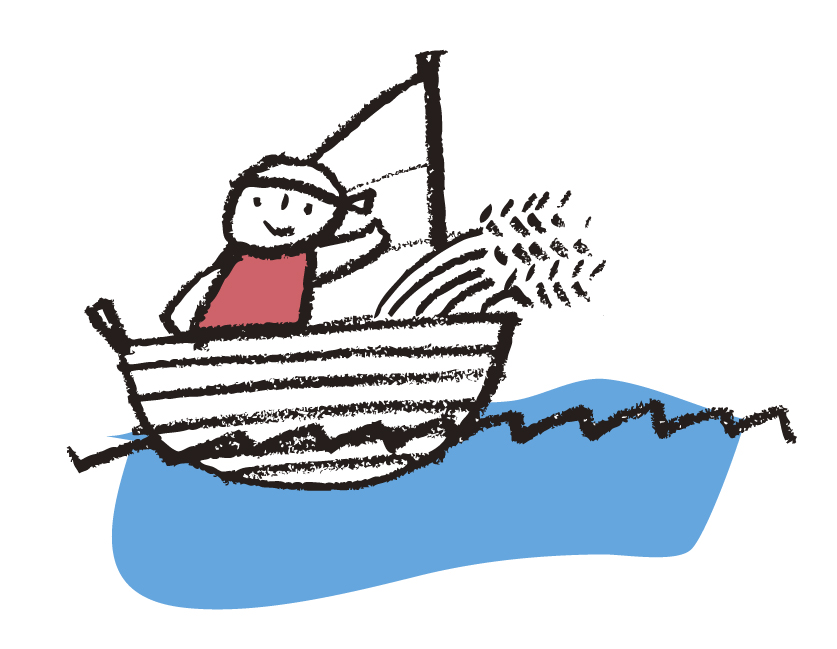

三大祭
キリスト教には三大祭と言われる祝祭があります
イースター礼拝
イエス・キリストが死から復活されたことをお祝いします。年毎に日は変わり、毎年3月下旬から4月上旬の日曜日に守られます。
ペンテコステ礼拝
人々の上に聖霊が降り、世界に最初の教会が建てられたことを記念する祝祭です。イースターと同じく年毎に日が変わり、イースターから50日後の日曜日に守られます。
クリスマス礼拝
毎年12月25日です。教会では12月25日か直前の日曜日にクリスマス礼拝が行われ、イエス・キリストの誕生をお祝いします。
また毎年12月24日は夜6時30分からクリスマスイブ礼拝を守ります。こどもたちから、初めて来会される方々を含めて、讃美を共にし、キリストの誕生をお祝いします。礼拝後、近隣の病院を訪問し、キャロリング（一緒に讃美歌を歌う）をしています。
